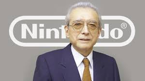

Fusajiro Yamaunchi
Nintendo was founded by Fusajiro Yamaunchi in 1889 in Kyoto, Japan. He began the company by making handmade Hanafuda playing cards, which helped establish Nintendo's early success before it later envolved into a major video game company. He passed away January 1st,1940 due to a stroke. As of today Nintendo is now owned by many shareholders and managed by the current president (Ceo) Shuntaro Furukawa, who leads the company's operations.
Mario
Mario is a famous Nintendo Character who first appeared in 1981. He is known as cheerful plumber who often goes on adventures to save Princes Peach. With his red hat and blue overalls, Mario has become one of the most recognizable and beloved video game character of all time.

Nintendo Locations
While Nintendo Global headquarters is in Kyoto, Japan, it has its major office called Nintendo of America located in Redmond, Washington and Nintendo of Europe located in Frankfurt, Germany. Nintendo has 3 offical stores (Nintendo of New York, Nintendo Toyoko and Nintendo Osake).